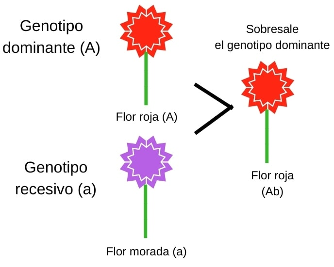
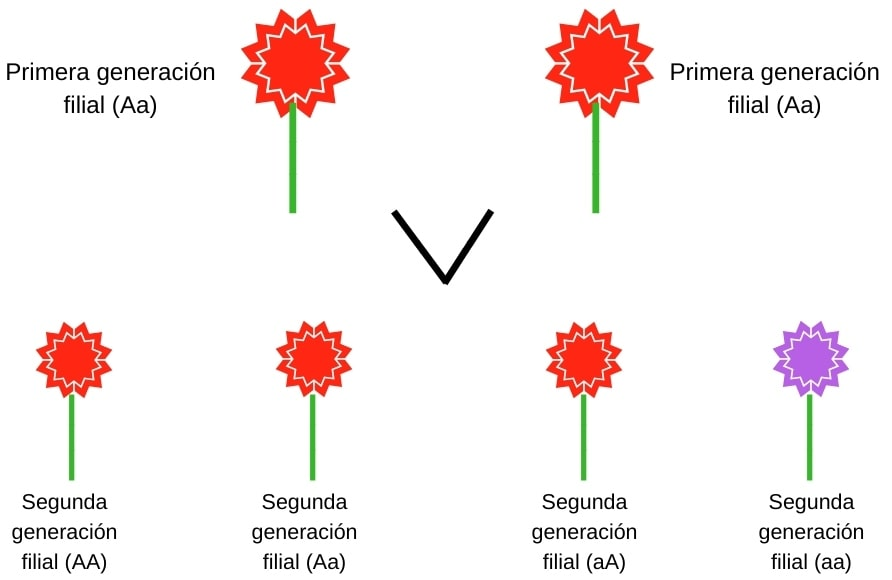
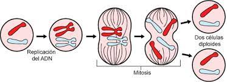

Gregor Johann Mendel nació el 20 de julio de 1822 en el seno de una familia de alemanes de los Sudetes, en un pueblo llamado Heinzendorf (hoy Hynčice, en el norte de Moravia, República Checa) en la provincia austriaca, y fue bautizado con el nombre de Johann Mendel. Tomó el nombre de padre Gregorio al ingresar como fraile agustino, el 9 de octubre de 1843, en el convento de agustinos de Brünn (conocido actualmente como Brno) y sede de clérigos ilustrados. El 6 de agosto de 1847 fue ordenado sacerdote. En 1849 realizó un examen con intención de ingresar como profesor en una escuela secundaria en Znaim (actualmente conocida como Znoimo), pero suspendió. En 1851 ingresó a la Universidad de Viena donde estudió historia, botánica, física, química y matemática. Allí comenzaría diversos análisis sobre la herencia de los guisantes.
Historia de la genética de la genética se considera que comienza por el trabajo del monje Agustino Gregor Mendel. Su investigación sobre hibridación en guisantes, publicada en 1866, describe lo que más tarde se conocería como las leyes de Mendel.
El año 1900 marcó el «redescubrimiento de Mendel» por parte de Hugo de Vries, Carl Correns y Erich von Tschermak, y para 1915 los principios básicos de la genética mendeliana habían sido aplicados a una amplia variedad de organismos, donde destaca notablemente el caso de la mosca de la fruta (Drosophila melanogaster). Bajo el liderazgo de Thomas Hunt Morgan y sus compañeros «drosofilistas», los especialistas en genética de Mendel desarrollaron la teoría mendeliana-cromosómica de la herencia, la cual fue ampliamente aceptada para 1925. Paralelamente al trabajo experimental, los matemáticos desarrollaron el marco estadístico de la genética de poblaciones, y llevaron la interpretación genética al estudio de la evolución.
Con los patrones básicos de la herencia genética establecidos, muchos biólogos se volvieron hacia investigaciones sobre la naturaleza física de los genes. En los años cuarenta y a principios de los cincuenta, los experimentos señalaron al ADN como parte de los cromosomas (y quizás otras nucleproteínas) que contenía genes.
El enfoque sobre nuevos organismos modelo tales como virus y bacterias, junto con el descubrimiento en 1953 de la estructura en doble hélice del ADN, marcaron la transición a la era de la genética molecular.La regulación de la expresión génica se volvió un tema central en los años sesenta, y para los años setenta dicha expresión génica podía ser controlada y manipulada utilizando ingeniería genética. Durante lás últimas décadas del siglo XX muchos se enfocaron a proyectos genéticos a gran escala, secuenciando genomas enteros.
- El GENOTIPO es la composición genética de un organismo heredada de sus progenitores mientras que el FENOTIPO es cualquier característica o rasgo observable de un organismo, como su morfología, desarrollo, propiedades bioquímicas, fisiología y comportamiento.
- El GEN es un segmento corto de ADN. Los genes le dicen al cuerpo cómo producir proteínas específicas. Hay aproximadamente 20,000 genes en cada célula del cuerpo humano. Juntos forman constituyen el material hereditario para el cuerpo humano y la forma como funciona.
- El GENOMA es todo el material genético de un organismo en particular y se hereda generación tras generación. Por otra parte, el EXOMA es la parte del genoma que codifica para proteínas (se llama así porque solo considera los exones, que son las partes de un gen que se traducen en proteína).
- El ADN o ácido desoxirribonucleico, es un ácido nucleico que contiene las instrucciones genéticas usadas en el desarrollo y funcionamiento de todos los organismos vivos y algunos virus; también es responsable de la transmisión hereditaria.
-
El ARN es un ácido nucleico formado por una cadena de ribonucleótidos.Está presente tanto en las células procariotas como en las eucariotas, y es el único material genético de ciertos virus (los virus ARN).
El ARN se puede definir como la molécula formada por una cadena simple de ribonucleótidos, cada uno de ellos formado por ribosa, un fosfato y una de las cuatro bases nitrogenadas (adenina, guanina, citosina y uracilo). El ARN celular es lineal y monocatenario (de una sola cadena), pero en el genoma de algunos virus es de doble hebra. - El DOGMA CENTRAL DE LA BIOLOGÍA MOLECULAR afirma que el ADN contiene las instrucciones para crear proteínas, las que se copian en el ARN. Luego el ARN usa estas instrucciones para crear una proteína. En resumen: ADN → ARN → Proteína, o ADN a ARN a Proteína.
- El CÓDIGO GENÉTICO son las instrucciones que le dicen a la célula cómo hacer una proteína específica. A, T, C y G, son las "letras" del código del ADN; representan los compuestos químicos adenina (A), timina (T), citosina (C) y guanina (G), respectivamente, que constituyen las bases de nucleótidos del ADN. El código para cada gen combina los cuatro compuestos químicos de diferentes maneras para formar "palabras" de tres letras las cuales especifican qué aminoácidos se necesitan en cada paso de la síntesis de una proteína.
- MITOSIS es un proceso que ocurre en el núcleo de las células eucariotas y que precede inmediatamente a la división celular. Consiste en el reparto equitativo del material hereditario característico. MEIOSIS es una de las formas de la reproducción celular, se produce en las gónadas para la producción de gametos. La meiosis es un proceso de división celular en la que una célula diploide experimenta dos divisiones sucesivas, con la capacidad de generar cuatro células haploides.
- CROMOSOMAS son estructuras que se encuentran en el centro (núcleo) de las células que transportan fragmentos largos de ADN. El ADN es el material que contiene los genes y es el pilar fundamental del cuerpo humano. Los cromosomas también contienen proteínas que ayudan al ADN a existir en la forma apropiada. Los cromosomas tienen una estructura doble, compuesta por dos estructuras paralelas entre sí y unidas por un centrómero, llamadas cromátidas.
-
Una MUTACIÓN es un cambio aleatorio en el ADN que puede ser beneficiosa, neutra o dañina para el organismo. Pueden producirse en multitud de lugares dentro del material hereditario clasificándose en: génicas (mutaciones que afectan a un solo gen), y cromosómicas (mutaciones que afectan a un segmento cromosómico u ocasionan variaciones en el número de cromosomas). Son la fuente primaria de variabilidad genética de las poblaciones. Las mutaciones pueden darse en tres niveles diferentes:
- Molecular (génicas o puntuales): Son mutaciones a nivel molecular y afectan la constitución química de los genes, es decir a la bases o “letras” del ADN.
- Cromosómico: El cambio afecta a un segmento de cromosoma (de mayor tamaño que un gen), por tanto a su estructura. Estas mutaciones pueden ocurrir porque grandes fragmentos se pierden (deleción), se duplican, cambian de lugar dentro del cromosoma.
- Genómico: Afecta al conjunto del genoma, aumentando el número de juegos cromosómicos (poliploidía) o reduciéndolo a una sola serie (haploidía o monoploidía) o bien afecta al número de cromosomas individualmente (por defecto o por exceso), como la trisomía 21 o Síndrome de Down.
Establece que, si se cruzan dos líneas puras para un determinado carácter, los descendientes de la primera generación serán todos iguales entre sí, fenotípica y genotípicamente, e iguales fenotípicamente a uno de los progenitores (de genotipo dominante), independientemente de la dirección del cruzamiento. Expresado con letras mayúsculas las dominantes (A = amarillo) y minúsculas las recesivas (a = verde), se representaría así: AA x aa = Aa, Aa, Aa, Aa. En pocas palabras, existen factores para cada carácter los cuales se separan cuando se forman los gametos y se vuelven a unir cuando ocurre la fecundación. 
Esta ley establece que durante la formación de los gametos, cada alelo de un par se separa del otro miembro para determinar la constitución genética del gameto filial. Es muy habitual representar las posibilidades de hibridación mediante un cuadro de Punnett.
Mendel obtuvo esta ley al cruzar diferentes variedades de individuos heterocigotos (diploides con dos variantes alélicas del mismo gen: Aa) y pudo observar en sus experimentos que obtenía muchos guisantes con características de piel amarilla y otros (menos) con características de piel verde, comprobó que la proporción era de 3/4 de color amarillo y 1/4 de color verde (3:1). Aa x Aa = AA, Aa, Aa, aa.
Según la interpretación actual, los dos alelos, que codifican para cada característica, son segregados durante la producción de gametos mediante una división celular meiótica. Esto significa que cada gameto va a contener un solo alelo para cada gen. Lo cual permite que los alelos materno y paterno se combinen en el descendiente, asegurando la variación.
Para cada característica, un organismo hereda dos alelos, uno de cada progenitor. Esto significa que en las células somáticas, un alelo proviene de la madre y otro del padre. Estos pueden ser homocigotos o heterocigotos.
En ocasiones es descrita como la 2.ª ley, en caso de considerar solo dos leyes (criterio basado en que Mendel solo estudió la transmisión de factores hereditarios y no su dominancia/expresividad). Mendel concluyó que diferentes rasgos son heredados independientemente unos de otros, no existe relación entre ellos, por lo tanto el patrón de herencia de un rasgo no afectará al patrón de herencia de otro. Solo se cumple en aquellos genes que no están ligados (es decir, que están en diferentes cromosomas) o que están en regiones muy separadas del mismo cromosoma. En este caso la descendencia sigue las proporciones. Representándolo con letras, de padres con dos características AALL y aall (donde cada letra representa una característica y la dominancia por la mayúscula o minúscula), por entrecruzamiento de razas puras (1.ª Ley), aplicada a dos rasgos, resultarían los siguientes gametos: Al x aL = AL, Al, aL, al.
Al intercambiar entre estos cuatro gametos, se obtiene la proporción AALL, AALl, AAlL, AAll, AaLL, AaLl, AalL, Aall, aALL, aALl, aAlL, aAll, aaLL, aaLl, aalL, aall.
Como conclusión tenemos: 9 con "A" y "L" dominantes, 3 con "a" y "L", 3 con "A" y "l" y 1 con genes recesivos "aall".
La teoría cromosómica de la herencia o teoría cromosómica de Sutton y Boveri es la explicación científica sobre la transmisión de determinados caracteres a través del código genético que contiene la célula viva, que ocurre entre una generación de individuos y la siguiente.
Esta teoría fue desarrollada por los científicos Theodor Boveri y Walter Sutton en el año 1902. A pesar de la distancia entre ellos, Boveri (alemán, 1862-1915) y Sutton (estadounidense, 1877-1916) postularon las mismas conclusiones de manera independiente a partir de conocimientos existentes previamente sobre la herencia y sobre el funcionamiento celular.
La teoría cromosómica de la herencia estudió los genes, o sea, los segmentos de ADN que codifican proteínas específicas, llamados también “factores hereditarios” en sus estudios sobre la herencia Gregor Mendel (1822-1884). Específicamente, postuló que los genes se ubican dentro de los cromosomas de la célula, ubicados a su vez dentro del núcleo celular.

- Reconocimiento y fijación a la célula hospedadora, mediado por receptores específicos
- Penetración del virus al interior de la célula mediante endocitosis o fusión de membranas
- Pérdida de la cápside y liberación del genoma viral
- Síntesis precoz de RNAm viral y de proteínas virales no estructurales necesarias para la replicación y la transcripción viral
- Replicación del genoma viral
- Síntesis tardía de RNAm viral y de proteínas estructurales
- Modificación postranscripcional de las proteínas virales
- Ensamblaje y formación de las partículas virales, que se puede realizar en distintas partes de la célula (núcleo, citoplasma, membrana plasmática, etc.)
- Liberación del virus mediante lisis celular, exocitosis o gemación
- Maduración de la partícula viral (partícula infectiva).


-
La Biotecnología se define como un área multidisciplinaria, que emplea la biología, química y procesos varios, con gran uso en agricultura, farmacia, ciencia de los alimentos, ciencias forestales y medicina. Probablemente el primero que usó este término fue el ingeniero húngaro Karl Ereky, en 1919.
La biotecnología, comprende investigación de base y aplicada que integra distintos enfoques derivados de la tecnología y aplicación de las ciencias biológicas, tales como biología celular, molecular, bioinformática y microbiología marina aplicada. Se incluye la investigación y desarrollo de sustancias bioactivas y alimentos funcionales para bienestar de organismos acuáticos, diagnóstico celular y molecular, y manejo de enfermedades asociadas a la acuicultura, toxicología y genómica ambiental, manejo ambiental y bioseguridad asociado al cultivo y procesamiento de organismos marinos y dulceacuícolas, biocombustibles, y gestión y control de calidad en laboratorios.
-
La genética humana describe el estudio de la herencia biológica en los seres humanos. La genética humana abarca una variedad de campos incluidos: la genética clásica, citogenética, genética molecular, biología molecular, genómica, genética de poblaciones, genética del desarrollo, genética médica y el asesoramiento genético. El estudio de la genética humana puede ser útil ya que puede responder preguntas acerca de la naturaleza humana, comprender el desarrollo eficaz para el tratamiento de enfermedades y la genética de la vida humana. Este artículo describe solo características básicas de la genética humana.
La fecundación es la unión del espermatozoide con un ovocito secundario; se lleva a cabo en la ampolla de la trompa de Falopio a través de diversos procesos que permiten la fusión entre ambos gametos. Previo a esto se requieren cambios en el espermatozoide, como es la capacitación y la reacción acrosómica.
La fecundación humana es interna, es decir se produce dentro del cuerpo de la mujer, concretamente en las trompas de Falopio. El óvulo es fecundado en la trompa (1 día) y luego avanza hacia el útero (entre 2 y 5 días). Al cabo de cinco días llega a la cavidad uterina y el embrión anida en la misma (entre 6 y 7 días).
El embrión es la etapa inicial del desarrollo de un ser vivo mientras se encuentra en el huevo o en el útero de la hembra. En el caso específico del ser humano, el término se aplica hasta la octava semana desde la concepción. A partir de la novena semana, el embrión pasa a denominarse feto.
El desarrollo embrionario es el periodo que se produce entre la fecundación y el parto. Dura normalmente nueve meses, y en cada uno de los trimestres en los que se divide se desarrollan diferentes partes del cuerpo.
-
Alecitos, isolecitos u oligolecitos: Son los huevos donde el vitelo está uniformemente distribuido, como los de los anfibios.

- Heterolecitos: contienen más vitelo que los anteriores y está desigualmente distribuido, siendo más abundante el polo vegetativo. Ejemplo de ello son los huevos de los anélidos, moluscos y anfibios.
- Telolecitos: el vitelo es muy abundante y ocupa casi todo el huevo, de modo que el citoplasma se reduce a un pequeño casquete donde se encuentra el núcleo. Así sucede con los huevos de los reptiles, aves y muchos peces.
- Centrolecitos: tienen forma casi oval y el vitelo se acumula en el centro del huevo. El citoplasma rodea el vitelo y el núcleo se encuentra en el centro de la masa vitelina rodeado, a su vez, de una pequeña porción del citoplasma. Este es el caso de los huevos de los artrópodos.

La teoría de la inducción explica excelentemente la diferenciación de las células. Ciertamente no resulta difícil comprender el desarrollo de todo el embrión por medio de este mecanismo. A medida que una estructura es inducida, esta, a su vez puede inducir otras estructuras. Ondas sucesivas de inducción podrían explicar todo el desarrollo embrionario organizado de los animales.
Poco después del descubrimiento de Spemann se comprobó que las propiedades inductoras del organizador se mantenían aun después de muertas las células. Esto inmediatamente sugirió la idea de que la inducción se cumple mediante el traspaso de alguna sustancia química del organizador a las células afectadas. Se pensó que la sustancia inductora impartía instrucciones a las células afectadas para que se diferenciaran de modo específico. Esta idea proporciona otra solución plosible al problema de establecer de que manera a partir de un solo cigote podían originarse células diversas.
La composición citoplasmática particular de una región estimularía a las células de la blástula, producidas en aquella región para liberar reguladores químicos especiales,Estas células tendrían así un rasgo característico , único en el embrión que les permitiría convertirse en el organizador del desarrollo.
- Regeneración: es el proceso natural de remplazar o reparar células, tejidos, órganos o, incluso, partes completas del cuerpo dañados o faltantes para que funcionen completamente en las plantas y los animales.
- Cicatrización: Es la reparación de una herida con tejido fibroso mediante un proceso biológico complejo resultado de movimiento, división y síntesis proteica celular, lo cual genera un producto final de tejido no funcional denominado cicatriz. La cascada de cicatrización se divide en estas cuatro fases superpuestas: Coagulación, Inflamación, Proliferación y Maduración. La coagulación, primera fase de la cicatrización, comienza inmediatamente después de presentarse la lesión y el objetivo es detener la hemorragia.
La homeostasis es una propiedad de los organismos que consiste en su capacidad de mantener una condición interna estable compensando los cambios en su entorno mediante el intercambio regulado de materia y energía con el exterior.
¿Cómo se produce la homeostasis en el organismo? El cuerpo o el organismo moviliza los diferentes sistemas (autorregulación), tales como el sistema nervioso central, el sistema endocrino, el sistema excretor, el sistema circulatorio, el sistema respiratorio, etcétera, para mantener constantes las condiciones de la vida.
La homeostasis se define "como la tendencia de los sistemas biologicos a adaptarse a las condiciones del medio externo y permanecer en estado de equilibrio interno". Existe tambien la homeostasis a nivel del ecosistema, donde actuan una serie de factores de caracter fisico y biologico.
La homeostasis ecológica se caracteriza por el equilibrio dinámico que existe entre las comunidades naturales y su medio. Cuando este equilibrio desaparece por diversas causas como inundaciones, incendios, sequías, terremotos, entre otros, la capacidad homeostasis desaparece generando un desequilibrio ecológico.
El hipotálamo es, junto con el tálamo, una de las partes de una estructura cerebral llamada diencéfalo, que se encuentra en el centro del encéfalo de los seres humanos, por debajo de la corteza cerebral y por encima del tronco del encéfalo.
Su nombre es una referencia directa al lugar que ocupa: "hipotálamo" significa, literalmente, "debajo del tálamo". En efecto, si nos fijamos en el dibujo de un corte sagital del cerebro humano veremos que el hipotálamo parece ser la montura del tálamo, que es bastante más voluminoso.
El tálamo se encarga de enviar los mensajes procedentes de los órganos sensoriales, como los ojos, los oídos, la nariz y los dedos, a la corteza cerebral. El hipotálamo controla el pulso, la sed, el apetito, los patrones de sueño y otros procesos que ocurren en el organismo de forma automática.
Las células madre son la materia prima del cuerpo; a partir de ellas se generan todas las demás células con funciones especializadas. Bajo las condiciones adecuadas en el cuerpo o en un laboratorio, las células madre se dividen para formar más células llamadas células hijas.
Las células madre producen glóbulos rojos, glóbulos blancos y plaquetas. Necesitamos todos estos tipos de células sanguíneas para mantenernos vivos. Para que estas células sanguíneas cumplan su función, necesitamos tener en la sangre la cantidad suficiente de ellas.
- Células madre embrionarias: Las células madre embrionarias humanas (ESC) son células pluripotentes, lo que significa que pueden fabricar cualquier otra célula del cuerpo. Están formadas a partir de blastocistos, células encontradas en embriones humanos en sus primeras fases de desarrollo.
- La división celular es una parte muy importante del ciclo celular en la que una célula inicial se divide para formar células hijas. Debido a la división celular se produce el crecimiento de los seres vivos. 